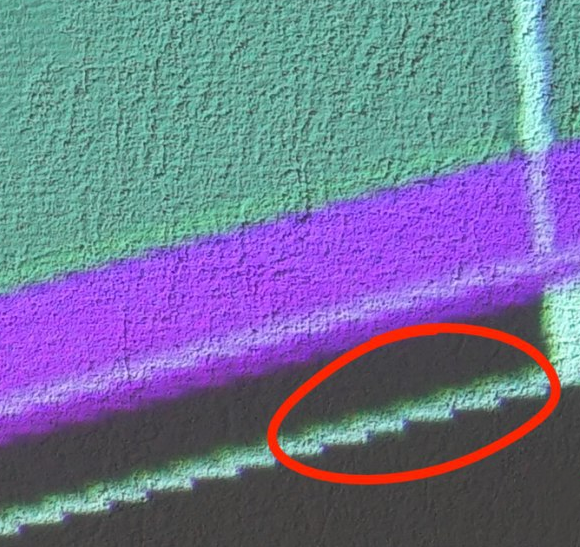
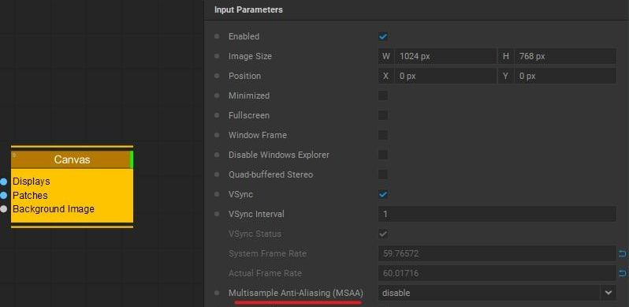
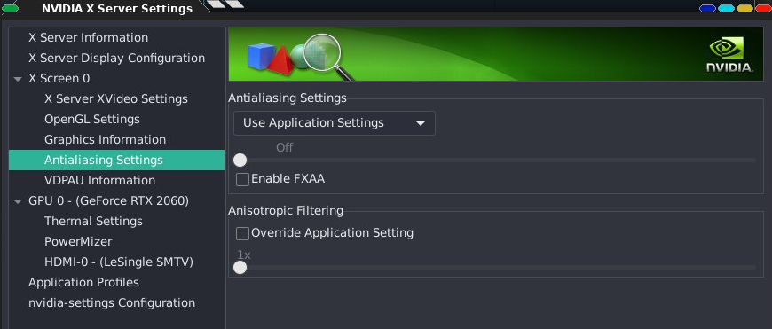

Antialiasing¶
Antialiasing is used to prevent “stairs” as shown in the picture below:
You find the setting in the menu of Canvas:
If you have a Nvidia GPU, also make sure to check the Antialiasing settings in there:
While doing Bézier distortion, the setting was not enough smooth for my purpose, so here is a workaround:
Create a RenderTarget which has 2x the size of your Canvas, enable Multisample Anti-Antialising.